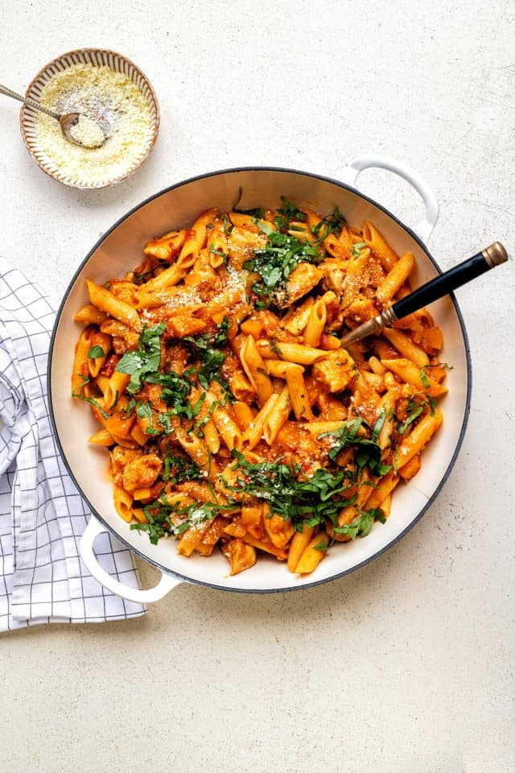

Home
Cajun Chicken Pasta

This Cajun Chicken Pasta ticks all the boxes: quick, easy, delicious and slimming friendly. A simple one-pot pasta dish the whole family will enjoy in 30 minutes.
- Course: Main Course
- Cuisine: American
- Prep Time: 10 mins
- Cook Time: 25 mins
- Total Time: 35 mins
- Servings: 4
Ingredients
- 4 Polish smoked sausages, sliced
- 1 Onion, finely diced
- 2 Tsp Cajun seasoning
- 1/2 Tsp Salt
- 2 Garlic cloves, minced
- 400g Chopped tomatoes
- 400g Dried pasta, rigatoni or penne
- 960ml Chicken stock
- 3 Tbsp Low-fat soft cheese
- 4 Tbsp Parmesan cheese, grated
- 2 Tbsp Fresh basil, chopped
- Salt and pepper, to taste
Method
- Mist a large pot with olive oil spray and pan fry the sausages over medium heat for a few minutes until it starts to crisp at the edges.
- Lower the heat and add the diced onion, Cajun seasoning and salt. Cook, stirring for about 5 minutes, until the onion starts to soften.
- Add the minced garlic and cook for a couple of minutes.
- Stir in the chopped tomatoes.
- Add the chicken stock and bring to a rolling simmer.
- Stir the pasta into the pot and lower the heat to a simmer, partially cover the pot. Cook, stirring occasionally, until the pasta is cooked through.
- Stir in the low-fat soft cheese until it melt and is incorporated into the sauce.
- Add the Parmesan cheese and stir to combine. Sprinkle salt (if needed) and freshly ground pepper.
- Serve immediately, garnished with chopped fresh basil and a little extra grated Parmesan cheese. Enjoy!